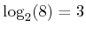

Next: pat_encoder Up: List of Functions Previous: create_field
Create the sequence pattern with rules.
PAT=PATTERN(PTYPE,NSEED,OPTIONS)
[PAT,BMAT] = PATTERN(PTYPE,NSEED,OPTIONS)
PAT=PATTERN(PTYPE,NSEED,OPTIONS) returns in PAT a sequence of Nsymb integers representing the symbol-pattern for a digital modulation. Nsymb=GSTATE.NSYMB see reset_all. In absence of OPTIONS the pattern is a bit-pattern, i.e. a vector of 0 and 1.
PTYPE is the type of the pattern and can be one of the following:
| Note: It is not possible to have the same sequence for different NSEED. |
Example: For a QPSK modulation, the two columns of BMAT represent the in-phase and quadrature component of a pseudo random quaternary sequence (PRQS), [3].
| Note: PAT and BMAT are of type double even for binary symbols. |
pat=pattern('20104101')
creates a periodic repetition of the sequence up to length Nsymb,
and truncates when necessary.
For instance, with Nsymb=16 returns pat = [2
0 1 0 4 1 0 1 2 0 1 0 4 1 0 1]. The sequence can be a string or
a vector of double, e.g:
pat=pattern('20104101') and
pat=pattern( [2 0 1 0 4 1 0 1])
are identical
pat=pattern('filename')
load the sequence from file 'filename'. The pattern is obtained by concatenating the rows of the file. For instance with Nsymb=8, the pattern pat=[3 0 1 0 1 2 1 0] can be written into 'filename' in the following equivalent forms:
PAT=PATTERN('debruijn',1) with GSTATE.NSYMB=8 returns the following:
PAT=[0 0 0 1 1 1 0 1];
Such a sequence contains the following subsequences of length : 000,001,011,111,110,101,010,100. The last two sequences can be found by periodic repetition of PAT.
This function implements the algorithm proposed in [2]. An useful reference about quaternary De Bruijn sequences can be found in [3].
Optilux toolbox reference manual